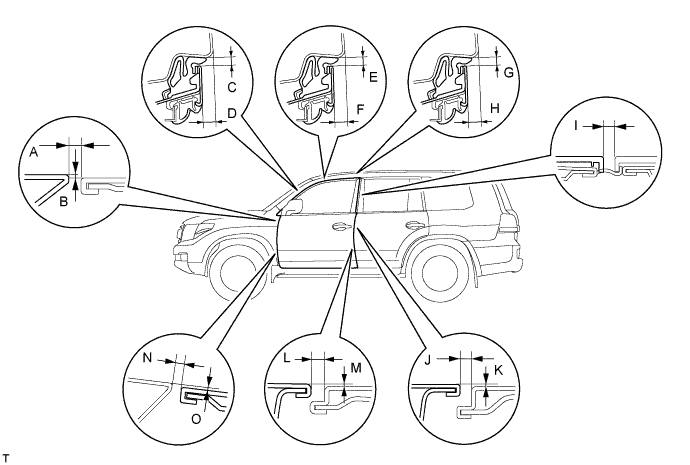
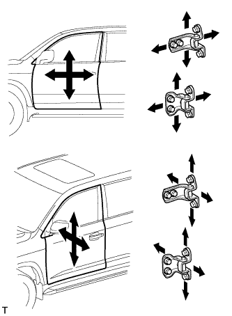
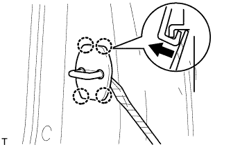
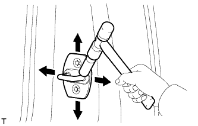

FRONT DOOR > ADJUSTMENT |

| 1. INSPECT FRONT DOOR |
Check that the clearance measurements of areas A to O are within the standard range.

| Area | Measurement | Area | Measurement |
| A | 2.2 to 5.2 mm (0.087 to 0.205 in.) | I | 3.5 to 6.5 mm (0.138 to 0.256 in.) |
| B | -1.5 to 1.5 mm (-0.0591 to 0.0591 in.) | J | 2.5 to 5.5 mm (0.0984 to 0.217 in.) |
| C | 3.3 to 6.3 mm (0.130 to 0.248 in.) | K | -1.5 to 1.5 mm (-0.0591 to 0.0591 in.) |
| D | 6.0 to 9.0 mm (0.236 to 0.354 in.) | L | 2.5 to 5.5 mm (0.0984 to 0.217 in.) |
| E | 3.4 to 6.4 mm (0.134 to 0.252 in.) | M | -1.5 to 1.5 mm (-0.0591 to 0.0591 in.) |
| F | 6.9 to 9.9 mm (0.272 to 0.390 in.) | N | 2.2 to 5.2 mm (0.0866 to 0.205 in.) |
| G | 3.4 to 6.4 mm (0.134 to 0.252 in.) | O | -1.5 to 1.5 mm (-0.0591 to 0.0591 in.) |
| H | 6.6 to 9.6 mm (0.260 to 0.378 in.) | - | - |
| 2. ADJUST FRONT DOOR |
 |
Disconnect the cable from the negative (-) battery terminal.
Using SST, loosen the body hinge bolts and adjust the door position.
Using SST, tighten the body hinge bolts after the adjustment.
Loosen the door hinge bolts and adjust the door position.
Tighten the door hinge bolts after the adjustment.
 |
Using a screwdriver, detach the 4 claws and remove the cover.
 |
Using a T40 "TORX" socket, adjust the striker position by slightly loosening the striker mounting screws and hitting the striker with a plastic-faced hammer.
Using a T40 "TORX" socket, tighten the striker mounting screws after the adjustment.
Attach the 4 claws to install the cover.
Connect the cable to the negative (-) battery terminal.
Check the SRS warning light (Click here).